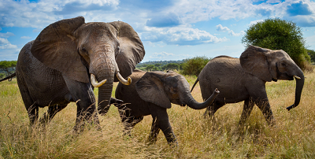

Which of the following is a function of the elephant's trunk?
- To suck up water for drinking and cooling
- To use as a snorkel
- To grab items that are too large to inhale
- To communicate (trumpet warnings and greet one another)
- All are true
You are correct! | Oooooh WRONG!
On which continent is the elephant not native/ found in the wild?
- South America
- Africa
- Asia
- Elephants are native to all 3 continents
- Elephants are not native to any of these continents
You are correct! | Oooooh WRONG!

Which of the following is the largest living elephant species?
- Asian
- African Savanna
- African Forest
- Woolly Mammoth
- Mr. Snuffleupagus
You are correct! | Oooooh WRONG!

How much does a baby elephant normally weigh at birth?
- 100 - 150 lbs
- 200 - 250 lbs
- 300 - 350 lbs
- 400 - 450 lbs
- up to 800 lbs depending on the species
You are correct! | Oooooh WRONG!

Which of the following poses the greatest threat to elephants' survival?
- Large feline predators (ex. lions)
- Declining birth rates
- Humans (poaching and habitat destruction)
- Mudslides
- Elephant populations are not endagered
You are correct! | Oooooh WRONG!
Which of the following is a common (true) claim about elephants?
- Elephants are afraid of mice
- Elephants have the sharpest eyesight in the animal kingdom
- Elephants love performing in the circus
- An elephant a day keeps the doctor away
- An elephant never forgets
You are correct! | Oooooh WRONG!